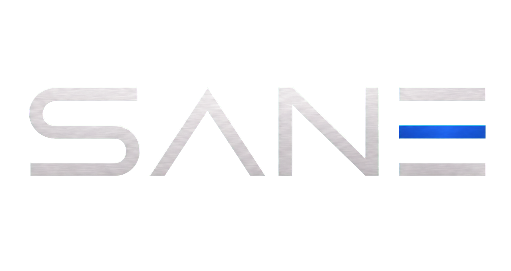

데이터 정산 운영
Data & Finance Operations후원 기록 전수 추적부터 지급 기준과 자동화 로그까지 정확하고 검증 가능한 정산 흐름을 만듭니다

FROM EDITOR TO DIRECTOR
좋은 콘텐츠가 지속 가능한 비즈니스로 이어지기 위해 필요한 모든 병목을 직접 해결해 왔습니다
영상 편집자로 커리어를 시작해 시청자의 트렌드와 밈을 읽고 채널을 성장시키는 방법을 배웠습니다
방송 환경, 후원 데이터, 웹 플랫폼, 광고 계약과 제작 일정까지 역할의 경계를 두지 않고 운영의 문제를 찾아 해결했습니다
후원 기록 전수 추적부터 지급 기준과 자동화 로그까지 정확하고 검증 가능한 정산 흐름을 만듭니다
팬 사이트와 운영 도구를 기획하고 프론트엔드·백엔드 개발부터 배포와 유지보수까지 담당합니다
광고 단가와 계약 조건, 캠페인 일정을 조율해 콘텐츠의 가치를 실질적인 매출로 연결합니다
전자녀와 시그니처, 오버레이, 비주얼 자산과 제작 가이드를 구축해 콘텐츠에 집중할 환경을 만듭니다
MY VISION